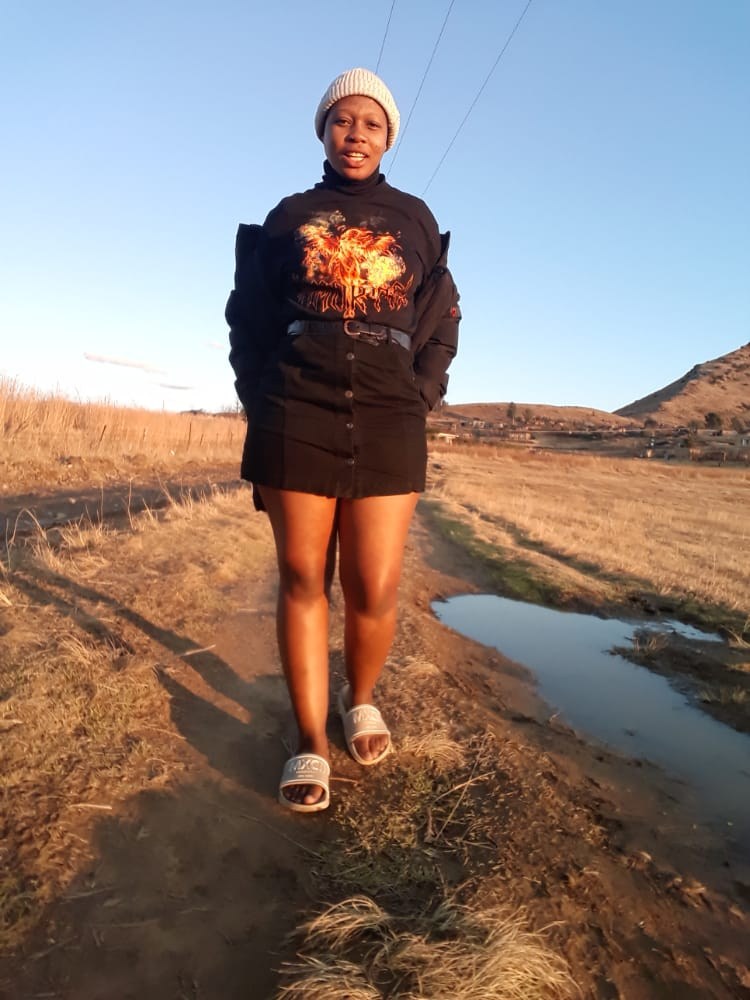

I used to be a good girl until I realised that be good does not help because mostly you are taken for granteed.
I learnt how to be hard girl which was not easy at all,I had to let some friends to go and it was hurting but I had no option.
After losing friends I realised that a mother was meant to be a good friend because that when I started have serious talk with my mother about boys,sex, and real friends.
After being admitted at the university it was easy for me because I did know who was going to comfort me, who was going to talk to me when she/he sees that am at my lowest.
But I think life is amazing sometimes because I meant real friends who has my back and it is amazing especially when you remember how you used to meet useless and selfish people back then.
To conclude with Tertiary life is very amazing and painful because you can pass and still fail and the same time hence we need to have true friends who are very supportive when it comes to school work.